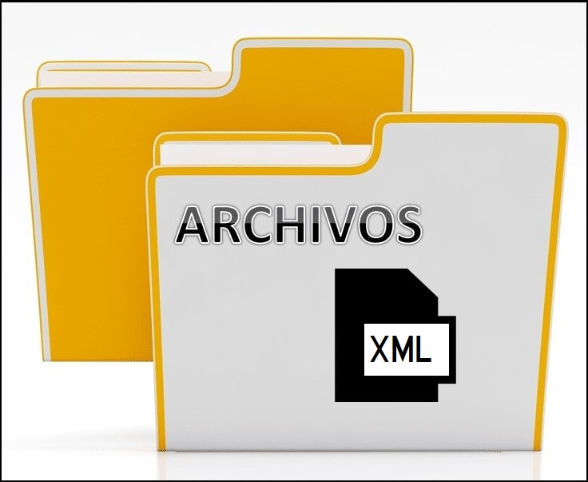

Los archivos planos son una colección de información que está almacenada y es accedida de forma organizada en una base de datos. Se suele usar para almacenar información en una forma no estructurada.
El lenguaje de marcado extensible (XML) permite definir y almacenar datos de forma compartible. XML admite el intercambio de información entre sistemas de computación, como sitios web, bases de datos y aplicaciones de terceros.

El formato JSON (JavaScript Object Notation) es un formato abierto utilizado como alternativa al XML para la transferencia de datos estructurados entre un servidor de Web y una aplicación Web.
 Apache Parquet es un formato de archivo en columnas que proporciona optimizaciones para acelerar las consultas. Es un formato de archivo mucho más eficaz que el archivo . csv o JSON. Para obtener más información, vea Archivos de Parquet.
Apache Parquet es un formato de archivo en columnas que proporciona optimizaciones para acelerar las consultas. Es un formato de archivo mucho más eficaz que el archivo . csv o JSON. Para obtener más información, vea Archivos de Parquet.